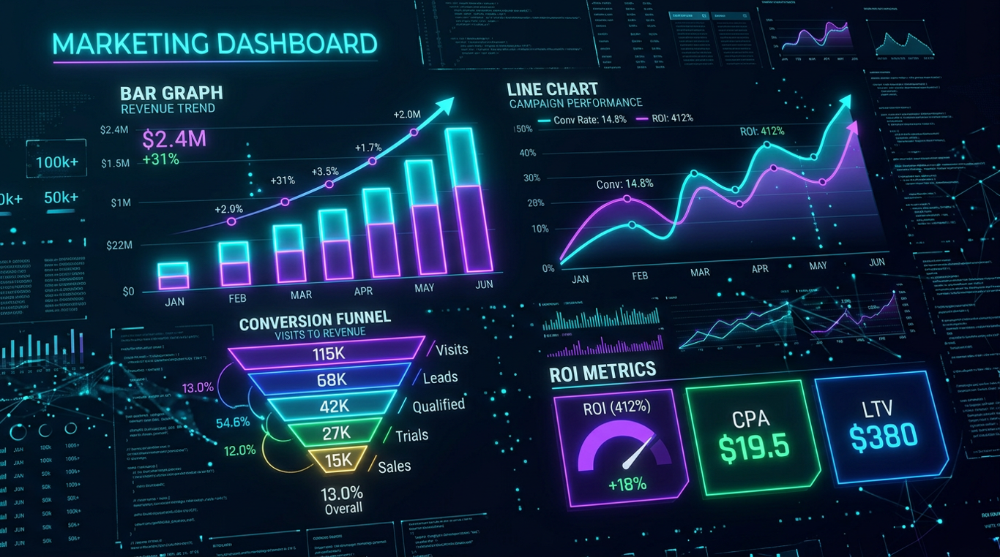
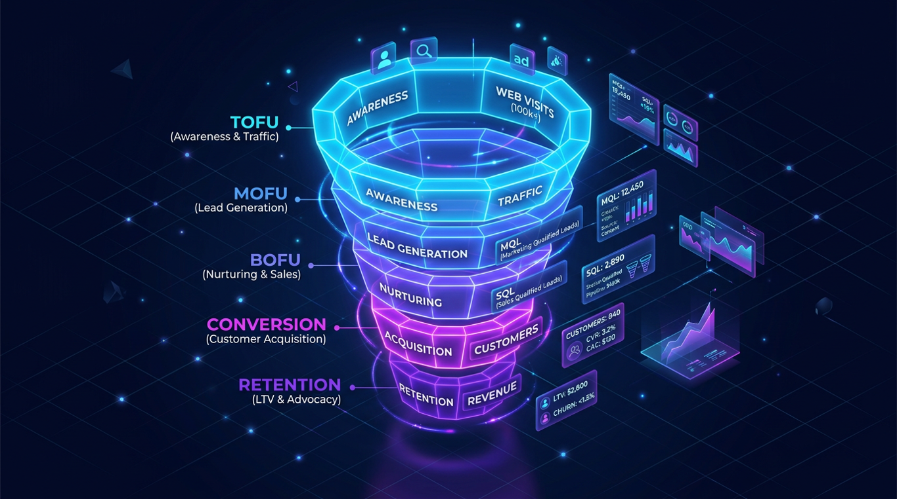
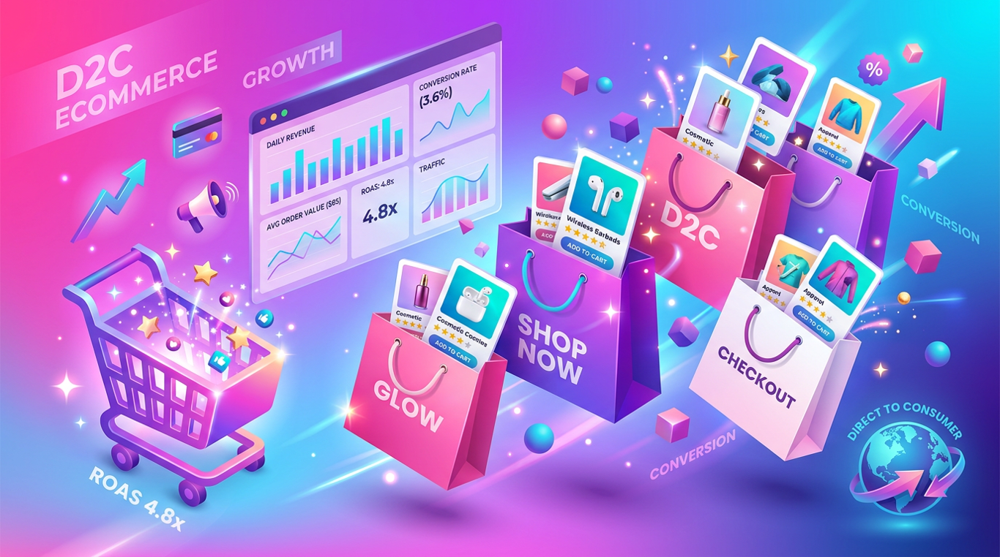
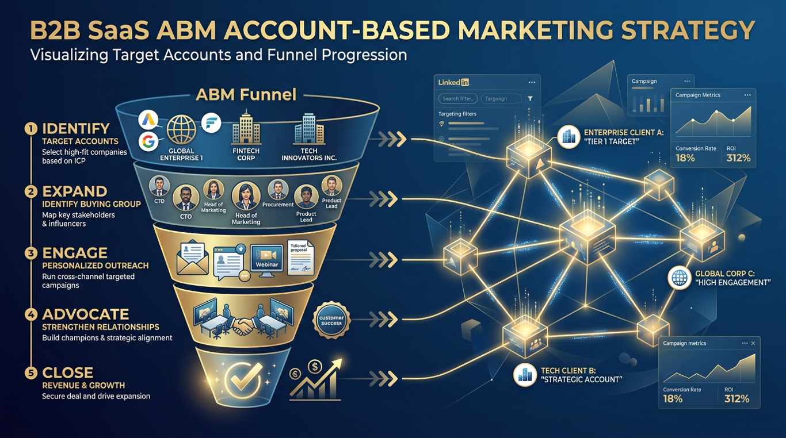
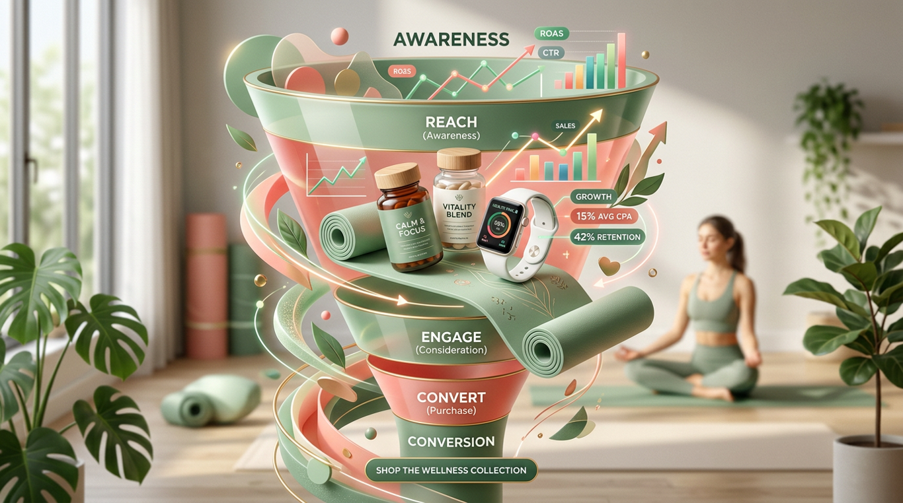

Hi, I'm Monish Kumar — a performance marketer based in Delhi, India. I help startups & growth-stage brands turn paid media, marketing automation, and CRO into a math-backed acquisition system.
I'm Monish — over the last 2+ years, I've worked hands-on with bootstrapped founders, agencies, and SaaS startups to architect performance marketing systems that focus on qualified pipeline, not vanity metrics.
My approach is built on three pillars: data attribution, creative testing velocity, and full-funnel automation. I treat every rupee like an investment with a tracked ROI — not just an ad spend line item.
I'm at a stage in my career where I'm hungry, technically deep, and ready to build long-term partnerships with founders who want a growth operator — not a "set & forget" agency.

A repeatable 4-stage operating system I follow on every project — from initial audit to scaled growth loops.
Diagnostic audit of analytics, attribution, ICP, funnel leakage, and unit economics. Instrument GA4, Hotjar, server-side tracking, and CRM before spending ₹1 on ads.
Build a 90-day GTM roadmap with weighted bets per channel. Every channel gets a clear hypothesis: "If we do X, Y should improve."
Launch campaigns with multiple creative variants, lead magnets, and landing page hypotheses. Weekly refresh, daily budget reallocation. Data-led sprints — not "set & forget."
Identify winning angles, scale via lookalikes & broader geos, double down on top performers. Layer retention loops: email automation, retargeting, LTV expansion.
Below are 6 in-depth case studies across SaaS, EdTech, Healthcare, and D2C. Each captures the real strategy, frameworks, and learnings from projects I've worked on hands-on.

An HR-tech SaaS was burning ad budget with no clarity on what was actually working. I rebuilt the attribution layer, restructured campaigns, and re-architected the lead magnet strategy.
Built a multi-step quiz funnel routing prospects into segmented email sequences. Focused on improving webinar show-up and creative-led trust-building for high-ticket programs.
Healthcare lead gen is operationally complex. I designed a 14-city geo-fenced acquisition system with WhatsApp routing, IVR fallback, and pin-code based landing pages to eliminate "wrong city" leakage.

A founder-led skincare brand had product-market fit but couldn't scale paid acquisition. I rebuilt the creative pipeline, restructured Meta + Google campaigns, and built Klaviyo retention flows.

Broad LinkedIn lead-gen wasn't working for an enterprise-targeting DevOps SaaS. I designed a 220-account ABM motion with sequenced outreach, account-named ad creatives, and warm-intro pathways.

Wellness brands live and die by repeat rate. I built a 9-flow Klaviyo retention system with predictive churn triggers, post-purchase education, and refill SMS automation.
A Series-A HR & Ops workflow SaaS was running paid acquisition across Google + LinkedIn but had no real attribution clarity. The sales team was drowning in low-intent leads and questioning the entire ad budget. This is how I'd approach (and approached) a rebuild.
When I started auditing, the picture was painfully familiar to anyone who has worked with early-stage SaaS:
The issue wasn't traffic volume — it was traffic quality and funnel architecture. My working hypothesis:
Implemented server-side GTM, GA4 enhanced ecommerce events, HubSpot lifecycle stages, and Hotjar funnel recording. Built a Looker Studio dashboard connecting ad spend to revenue.
Launched multiple LinkedIn ad variants, Google search themes, and 3 landing page versions. Tested ROI calculator vs. demo CTA vs. ebook download. ROI calculator won decisively in conversion testing.
Doubled budget on top-performing campaigns. Built HubSpot lead-scoring + Slack alerts so BDRs called hot leads within minutes of form submission. Layered retargeting via Meta + LinkedIn.
The single highest-leverage thing in B2B SaaS marketing is fixing attribution before scaling spend. Without it, you optimize toward false signals.
Replacing "Book a Demo" with "Calculate Your ROI" measurably reduced friction. A calculator captures higher intent than an ebook and lower friction than a demo.
Slack alerts + 7-minute SLA on BDR callbacks measurably improved demo conversion. This is one of the easiest wins most B2B teams miss.
LinkedIn ≠ Google. Each channel needs its own hypothesis, creative angle, and conversion mechanism. One unified strategy is lazy and underperforms.
Cohort-based courses sell on trust, not features. I designed a quiz-led funnel where prospects self-segmented into 3 readiness buckets, each receiving a tailored 4-day email sequence before a live masterclass — built around UGC alumni testimonials.
EdTech is one of the most competitive paid acquisition verticals in India. The classic pain points showed up:
For high-ticket cohort programs, trust is the conversion currency. My plan:
Built a 7-question quiz on Typeform mapping respondents to "PM-ready," "PM-curious," or "PM-skeptic" buckets. Each segment received a custom 4-email sequence in ConvertKit.
Produced batched UGC-style alumni testimonial videos. Tested 6 hooks × 4 thumbnails on Meta. Outcome-focused creatives (e.g., "switched career at X salary") consistently outperformed feature-driven ads.
Bi-weekly live masterclasses with 4-touch reminder sequences. Live offer + 48-hr scarcity at end. Show-up rate improved meaningfully vs. industry benchmark.
Quizzes don't just qualify — they make prospects feel seen. People who self-segment convert dramatically better than people who get generic nurture.
Alumni-shot phone videos outperform polished studio ads in EdTech. Trust is conveyed through unpolish + authenticity, not production value.
The single biggest webinar improvement came from layered WhatsApp + SMS + email reminders. Each new channel added ~10-15% to show-up rate.
48-hour post-webinar offer windows with countdown timers consistently move close rates. Used responsibly, scarcity is honest urgency.
Healthcare lead gen is as much an operations problem as a marketing problem. I designed a 14-city geo-fenced acquisition system with WhatsApp-driven pre-qualification, IVR fallback, and pin-code aware landing pages to eliminate "wrong city" leakage.
Healthcare lead gen has operational, regulatory, and creative complexities most other verticals don't face:
The fix had to be operational, not just creative:
Mapped all clinics with lat-long coordinates. Built 14 mirrored landing pages with auto-detected pin codes. Created WhatsApp chatbot tree with 9 service flows + automated branch routing.
Worked with the medical team on 16 compliant ad creatives. A/B tested emotional ("family safety") vs. clinical ("get screened") angles. Emotional family-led messaging outperformed.
Added live booking calendar with deposit option. Layered retargeting for "viewed but didn't book" with offer codes. Booking conversion improved significantly over the engagement.
For local services, broad geo targeting is one of the largest sources of wasted spend. Tight radius fencing per location is table stakes.
In India, WhatsApp pre-qualification flows convert dramatically better than form-fills. The conversation is the conversion.
The best healthcare creatives lean on emotion (family, peace of mind) — not disease names or fear. This is both ethically right and Meta-compliant.
The biggest "marketing" leverage in this case was operational — fixing booking flow, not finding more leads. Marketers should always check the last-mile first.
A founder-led D2C skincare brand had strong product-market fit on Instagram organic but couldn't scale paid acquisition profitably. I rebuilt the creative pipeline, restructured Meta + Google campaigns, and built a Klaviyo retention OS to fix the leaky bucket.
The founder was running paid herself with classic D2C founder symptoms:
D2C scaling is roughly 70% creative + 30% offer architecture:
Briefed and produced 24 creatives in batch — 60% UGC, 20% educational ("how to layer skincare"), 20% offer-driven. Rebuilt Shopify product feed for Google Merchant + Meta Catalog.
Restructured to 2 ASC (Advantage+ Shopping) campaigns + 1 cold prospecting CBO + 1 retargeting CBO. Killed under-performers weekly. Layered Google Shopping (PMax) as a second engine.
Built 7 Klaviyo flows: welcome series, browse abandon, cart abandon, post-purchase, win-back, VIP, and replenishment. Each flow had A/B tested subject lines and offer ladders.
Meta's algorithm has commoditized targeting — the lever is now creative diversity & velocity. Brands that ship 10+ creatives/week win.
For sub-₹1000 AOV D2C brands, paid acquisition is brutal. Bundle offers are the most reliable way to push AOV without raising prices.
Email & SMS contribute 25-35% of revenue in well-run D2C brands. Most founders treat it as an afterthought — it should be a top-3 priority.
Don't put everything in Advantage+. Use ASC for scale, but keep a CBO with manual creative testing to feed it new winners.
An enterprise-targeting DevOps SaaS was running broad LinkedIn lead gen — and getting interns + students instead of CTOs. I designed a 220-account ABM motion: tight ICP curation, multi-channel sequenced outreach, account-named ad creatives, and warm-intro pathways.
Classic SMB-style growth tactics weren't translating to enterprise:
Stop chasing leads. Start engaging accounts. My plan:
Built a 220-account target list using Apollo + Tracxn + manual curation. Mapped 1,050 decision makers across CTO, VP Eng, DevOps Lead roles. Enriched with intent signals (G2, Bombora).
Built a 7-touch sequence on Outreach.io: LinkedIn engagement → personalized email → connection request → voice note → reply nurture → cold call → respectful break-up.
Ran LinkedIn Matched Audiences against the 220-list with custom creatives that named each account's industry. Increased account-level engagement on the target list.
Done right, ABM blurs the line between marketing and sales. It can't be owned by either alone — it requires shared accounts, shared metrics, shared accountability.
220 well-mapped accounts outperformed lists of 2,000+ unverified contacts. The discipline is in the curation, not the volume.
On enterprise deals, a founder-network warm intro is worth 50 cold emails. Map this asset early in any ABM motion.
Templated outreach can still be personalized — using {{company}}, {{role}}, {{recent_news}} variables done well is "personal enough" for high reply rates.
D2C wellness brands live and die by repeat rate. I built a 9-flow Klaviyo retention system with predictive churn triggers, post-purchase education, and refill SMS — designed around an RFM (Recency-Frequency-Monetary) framework.
Acquisition was working — but retention was the leak:
Retention isn't about discounts — it's about perceived value over time:
Audited the existing Klaviyo setup. Built 14 dynamic segments (VIPs, lapsed, at-risk, new buyers, browse-abandoners, etc.). Each segment got tailored content tone, frequency, and offers.
Built 5-email post-purchase education series for each product category. Added refill SMS at day 25 (for 30-day cycle products). Reframed messaging from "buy more" to "get results."
Built an RFM scoring model in Klaviyo. Triggered win-back flows for customers showing churn signals (declining recency + frequency). Personalized offers based on prior purchases.
For wellness, the highest-LTV customers are educated customers. A great post-purchase education series outperforms any % off discount.
SMS refill reminders sent 5 days before the customer's product runs out had dramatically higher open & click rates than generic email blasts.
RFM (Recency-Frequency-Monetary) is the most useful framework in D2C retention. It's simple enough to operationalize and predictive enough to act on.
Win-back campaigns triggered before predicted churn convert better than reactive win-back after the customer is already gone.
Three core engagement models — pick what matches your stage and ambition.
A 14-day deep audit of your acquisition, attribution, and funnel. You walk out with a 90-day roadmap and a prioritized execution backlog.
Monthly retainer where I run your paid acquisition end-to-end — campaigns, creatives, landing pages, CRM, weekly reporting.
For founders who need senior strategic firepower without a full-time hire. I plug into your team, work with your existing vendors, set OKRs, and run weekly growth meetings.
Tools I use daily across acquisition, attribution, automation, and analytics.
I take on 3-4 active clients at a time. If your brand is ready for a math-backed performance engine, let's talk.
Based in Delhi · Working with brands across India, UAE, US & SEA